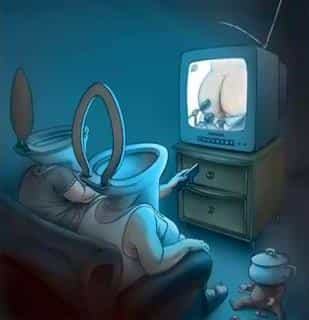
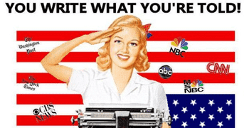

< < < Back
3 Reasons For The Downfall Of Mainstream Journalism – Return Of Kings
As I’m reading Roosh’s new book
After the outrage over the international meet-ups we were trying to organize earlier this year, I did an analysis of the mainstream media’s coverage. Swedish feminists went nuts when they they discovered that a “pro-rape rally” was being held in Stockholm. As you would expect, the media went along with their side of the story.
Out of the 20 articles I could find regarding the meet-ups, from six different outlets, 15 contained the false claim that Roosh wants to legalize rape. Ten articles had the claim in the headline, front and center. In seven articles, Roosh is described as a misogynist, and several more say there’s something wrong with his view of women. Consequently, SJWs on social media expressed their wish to assault, rape and kill Roosh (they also thought he was coming to Stockholm in person).
So why did this happen? Why did formerly respectable news outlets stoop to spreading lies propagated by mentally unstable women and manginas hell-bent on destroying masculinity and men in general? I see at least three reasons for it: a failing business model, tabloidization and leftist bias.
1. Failing business model
Good journalism, like everything else, costs money. But fewer and fewer are willing to pay for it.
It’s well known that the newspaper business is going through a crisis at the moment. You hear about big media companies laying off hundreds of journalists, trying to adjust to a new era where people can get their news for free on the Internet.
The negative trend has been ongoing for years, but 2015 was particularly bad for newspapers, according to Pew Research Center. Weekday circulation fell 7 percent and Sunday circulation fell 4 percent. Advertising revenue fell by nearly 8 percent, the greatest drop since 2009. The share of revenue from digital advertising is increasing, but only because the revenue from non-digital advertising is diminishing so fast. What the news media earn from their websites is not enough to cover what they lose on print.
The newspaper workforce has shrunk by 39 percent in the last 20 years. These numbers are only for the US, but the trend is similar all over the West. What this means is that fewer journalists have to do more work. The pressure of publishing the latest news online as fast as possible also means that little time can be spent on fact checking, or even getting out of the newsroom to do interviews and research.
In the case of the meet-up outrage, reporters clearly didn’t bother to do more than a rewrite of what their colleagues wrote. For instance, Swedish media referenced British The Telegraph and Australian ABC. That way, the same lies were copy-pasted onto news sites all over the world. With less pressure to churn out articles at high speed, the reporters might have done their homework better.
2. Tabloidization

In times of dwindling readership, what do you do to gain more readers? You give them what you think they want.
A short definition of tabloidization can be found in an article on the subject by media scholar Frank Esser: “a downgrading of hard news and upgrading of sex, scandal and infotainment.” Apart from a decrease in journalistic standards, tabloidization entails an increase in soft news like scandal, sensation and entertainment.
To get advertisers interested in your particular news outlet, you need to reach a large audience. Taking a quote from Esser’s article: “Competition and the pressure to find stories sensational enough to make papers walk off newsagents’ counters encourage invention, exaggerations and the invasion of privacy.” In the digital age, it’s about getting views and shares. But the same rule applies as it has for more than a hundred years of tabloid press; you make up BS to get people’s attention.
A story about a man traveling around the world to lecture men about the benefits of raping women, is something that people are going to read. Never mind that it’s not true, and that you’re violating fundamental journalistic standards by spreading lies—you need readers and will do anything to get them.
3. Leftist bias

Probably the biggest and most obvious reason for the media’s reaction, is the fact that journalists in general are very left-leaning. There’s no real ideological difference between most journalists and SJW activists, they just put different labels on themselves.
One study of American media, both newspapers and TV news programs, showed that most of them have a liberal bias. Wall Street Journal was the most liberal, while Fox News was one of few outlets that actually leaned to the right.
There’s a problem in Sweden as well with the mainstream media consistently framing news stories in a leftist way. As I showed above, a majority of the outlets chose to portray Roosh as a rape propagandist, not even attempting to appear the least neutral.
Several studies where journalists were asked about which party they would vote for, confirms the leftist slant. The results showed that 63.3 percent sympathized with one of the three major left-wing parties, compared to 47.2 percent of the general population. While I’m not at all surprised, it’s nice to have some proof of what I already knew to be true.
Roosh and his neomasculine philosophy is a problem for these people. Actually, the truth in general is a problem for them. So they have to distort the facts in any way they can, and demonize those men who refuse to go along with their Marxist agenda.
I can’t imagine how much worse the situation would be if we didn’t have the Internet to communicate with each other.
 If you like this article and are concerned about the future of the Western world, check out Roosh's book Free Speech Isn't Free. It gives an inside look to how the globalist establishment is attempting to marginalize masculine men with a leftist agenda that promotes censorship, feminism, and sterility. It also shares key knowledge and tools that you can use to defend yourself against social justice attacks. Click here to learn more about the book. Your support will help maintain our operation.
If you like this article and are concerned about the future of the Western world, check out Roosh's book Free Speech Isn't Free. It gives an inside look to how the globalist establishment is attempting to marginalize masculine men with a leftist agenda that promotes censorship, feminism, and sterility. It also shares key knowledge and tools that you can use to defend yourself against social justice attacks. Click here to learn more about the book. Your support will help maintain our operation.
Read More: The “Drunk Girl In Public” Scandal Makes Both Feminists And The Mainstream Media Look Foolish